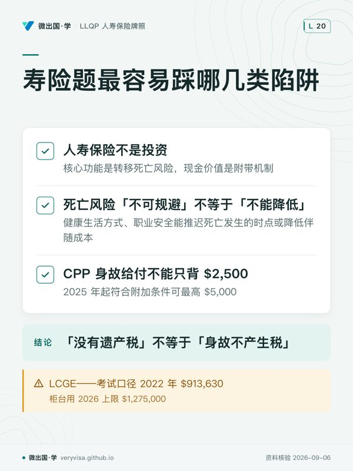

🃏 Flashcards · 3 闪卡 · 3 张 🖼 Slides · 2 幻灯 · 2 页 ✍️ Questions · 7 刷题 · 7 道
人寿保险 Life Insurance P2 稳住 P2 Hold steady
ZH EN ZH + EN
先看这一章怎么考 First, how this chapter is tested
多维冲击识别题：题干给出一个家庭或企业主的完整背景（如单亲、房贷、未注册升值资产、年幼子女），要求识别身故同时触发哪几类财务冲击，重点考是否漏掉非收入方的照护者损失（loss of caregiver）或视同处置（deemed disposition）税负。 Multi-dimensional impact identification questions: The question stem provides the comprehensive background of a family or business owner (such as a single parent, mortgage, non-registered appreciated assets, young children) and requires identifying which categories of financial impacts of death are triggered simultaneously, testing whether the candidate overlooks the loss of caregiver for a non-earning party or deemed disposition tax liabilities. 风险管理四招匹配题：题干描述客户采取的某项行动（如戒烟、用现有存款预留丧葬费、购买保单）或询问针对死亡风险某招是否可行，考避免（risk avoidance）、减少（risk reduction）、自留（risk retention）与转移（risk transfer）的精确区分与组合使用。 Four risk management strategies matching questions: The question stem describes an action taken by a client (such as quitting smoking, setting aside existing savings for funeral expenses, or purchasing an insurance policy) or asks whether a specific strategy is feasible for the risk of death, testing the precise distinction and combined application of risk avoidance, risk reduction, risk retention, and risk transfer. 视同处置与税务认知题：以客户声称“加拿大没有遗产税所以身故不用交税”或企业主传承合格小型企业股份为背景，测试视同处置（deemed disposition）机制、配偶递延例外以及终身资本利得豁免（LCGE）只能部分抵消而非全免。 Deemed disposition and tax awareness questions: Using scenarios where a client claims that because Canada has no estate tax, no tax is owed at death, or where a business owner transfers qualified small business corporation shares, testing the deemed disposition mechanism, the spousal rollover exception, and the rule that the Lifetime Capital Gains Exemption (LCGE) only partially offsets capital gains rather than fully eliminating tax. 最常丢分的陷阱（看到题干信号就警觉） Traps that cost the most marks (watch for the signal in the stem)
范畴遗漏（只算工资漏算照护） Category omission (counting lost salary while overlooking lost caregiving) 题干出现全职在家照顾幼童/失能亲属的配偶，或独自抚养未成年子女的单亲家长。 The question stem features a stay-at-home spouse caring for young children or disabled relatives, or a single parent raising minor children alone. 概念混淆（无遗产税等于无身故税） Concept confusion (equating no estate tax with no taxes at death) 题干中客户持有升值度假屋、未注册投资组合、企业股权或大额 RRSP/RRIF，且继承人是成年子女而非配偶。 The question stem features a client holding an appreciated vacation cottage, non-registered investment portfolio, corporate shares, or large RRSP/RRIF balances, with adult children rather than a spouse named as heirs. 机制混淆（把不可规避当成不能降低或不能自留） Mechanics confusion (treating unavoidability as inability to reduce or retain risk) 题干出现改善生活习惯、增加安全措施，或客户拥有充裕流动资产足以覆盖小额最终开支。 The question stem mentions improving lifestyle habits, adding workplace safety measures, or a client possessing ample liquid assets to cover small final expenses. 本章考点页：导图、要点表、7 道带逐项解析的练习 →
核实日期：2026-09-06｜本页现行数字的出处：StatCan 65 岁预期寿命现行值（Statistics Canada ）、CPP 遗属给付与一次性身故给付（Employment and Social Develo… ）、终身资本利得豁免 LCGE（canada.ca ）。
复核周期：2027-01-31。政府给付与豁免额每年可能调整，本页涉及金额均标注抓取日与出处；按龄死亡概率示例注明考试口径年份，不作为当前生命表数据。
想先把寿险、伤残险、重疾险和年金各补家庭哪种缺口放在一张图里看，可对照论坛说明LLQP 学到的四类保障分别补家庭哪种缺口 ，再回到本篇的寿险部分。
0. 这一篇解决什么问题
你要考的是 人寿保险模块（Life Insurance） ，本篇对应 CISRO 能力组件 c1「评估客户需求与处境」，占本模块权重最大的 35%——是全模块权重最大的一块。这一篇是整个 Life 模块的地图：讲哪一种产品之前，先把「死亡这件事会打断哪些财务目标」「代理人手上有哪几招风险管理工具、何时需要保险承接身故财务缺口」讲清楚。后面 11 篇各讲一种产品或一段流程，都是往这张地图上填格子，这里不重复产品条款。
这一篇帮你做到三件事：① 给出一张「死亡的六类财务冲击」清单，并说出每一类对应本模块哪一篇；② 讲清楚风险管理的四招（避免/减少/自留/转移）如何按家庭承受能力组合使用四种策略；③ 看懂 Life 模块 12 章按 CISRO 四个能力组件（c1–c4）怎么分布，尤其是为什么权重最大的 c1（35%）对应的不是第一章，而是靠后的第十章 。
一、制度设计与底层逻辑：身故财务风险为什么要单独评估 本节回答 This section answers 身故会打断哪六类财务安排，以及四招策略如何应对死亡。 Which six financial arrangements are interrupted by death, and how the four risk management strategies address the risk of death. 本章考题 1 Question 1 本章考题 2 Question 2
1. 死亡不是「产品清单」的起点，是「风险管理」的一个特例
代理人评估需求时不是从产品目录出发问客户「要不要买份保险」，而是从「一个人身故会打断哪些财务安排」出发，再问「这类损失能不能靠保险以外的办法处理」。这正是 CISRO 把「评估客户需求与处境」定成 Life 模块权重最大的能力组件的逻辑——本章不讲任何产品条款，只建两套框架：死亡会造成哪几类财务冲击 ，以及风险管理有哪几招、死亡风险适用哪一招。
图：人寿保险模块地图——死亡风险、财务冲击与风险管理
2. 死亡的六类财务冲击，每一类对应本模块一篇
一个人身故，财务上受影响的不只是「少了一份收入」，考试口径把它拆成六个互相独立、经常同时出现的维度：
⚠️
六类冲击经常同时出现，不是"选一个考"
题目常把一个家庭同时暴露的多个冲击（收入中断 + 照护缺口 + 教育金目标）包装成单一考点，只答其中一维就漏答。真实的需求分析（ch10）永远是把六类冲击逐条过一遍再加总，不是挑一个"最像"的答。
3. 风险管理四招，要按剩余财务缺口组合
代理人手上应对任何风险都是同一套通用框架——避免、减少、自留、转移 ——但死亡风险的特殊之处在于，避免死亡本身不可能，降低和自留则须结合风险与财务承受能力判断：
ℹ️
"转移"不是买保额越高越好
选对招数（转移）之后，转移多少额度仍要回到 ch10 的资本化方法去算，不是看到"转移"就无限拉高保额——保额建议永远要能对应回一笔具体的财务缺口。
节末检索小测 · 先别往回翻，凭记忆作答 Quick recall check: answer from memory before scrolling back
Liam and Chloe live in Victoria with their three-year-old twins. Liam works full-time as a civil engineer, while Chloe stays home full-time to care for the twins and Liam's frail mother. Liam thinks life insurance is only needed on his life because Chloe has no earned income. How should their insurance agent evaluate the financial impact if Chloe were to die prematurely?
Liam 和 Chloe 与他们三岁的双胞胎住在维多利亚。Liam 全职担任土木工程师，而 Chloe 全职在家照顾双胞胎和 Liam 体弱的母亲。Liam 认为只需要为他自己买人寿保险，因为 Chloe 没有劳动收入。如果 Chloe 过早身故，他们的保险代理人应如何评估其财务冲击？
a Chloe's death would cause no financial impact because she does not generate employment income for the household. ✗ 掉入“范畴遗漏（只算工资漏算照护）”陷阱。虽然 Chloe 没有工资收入（loss of income），但她承担了育儿与照护长辈的无偿劳务，身故会导致实实在在的照护替代支出。 Falls into the 'category omission (counting lost salary while overlooking lost caregiving)' trap. Although Chloe has no earned income (loss of income), she provides unpaid labor caring for the twins and elderly relative; her death would result in substantial out-of-pocket replacement care costs.
b Chloe's death would trigger a loss of caregiver impact, requiring Liam to pay for childcare and eldercare services. ✓ 正确。非收入方身故会触发六类冲击中的照护者损失（loss of caregiver），遗属必须额外花钱雇人替代其育儿和照护劳务，这在需求分析（needs analysis）中是独立于工资之外的真实缺口。 Correct. The death of a non-earning spouse triggers a loss of caregiver among the six financial impacts; survivors must pay out of pocket to hire replacement childcare and eldercare services, representing a genuine financial shortfall in needs analysis independent of lost wages.
c Chloe's death can be fully managed through risk avoidance by having Liam work from home permanently. ✗ 掉入“机制混淆”陷阱。活着本身就暴露于死亡风险，风险规避（risk avoidance）对死亡风险完全不适用，且 Liam 全职工作无法同时无成本替代全天候照护。 Falls into the 'mechanics confusion' trap. Living inherently exposes one to the risk of death, making risk avoidance completely inapplicable; moreover, working full-time prevents Liam from replacing full-time caregiving at zero cost.
d Chloe's death would primarily create a business impact that reduces Liam's corporate capital gains exemption. ✗ 掉入“概念混淆”陷阱。企业冲击（business impacts）适用于关键员工或企业主身故影响企业运营或股权处置，Liam 是受雇工程师、Chloe 是家庭照护者，不涉及企业股权豁免。 Falls into the 'concept confusion' trap. Business impacts apply to key employees or business owners whose death affects business operations or share disposition; Liam is an employed engineer and Chloe is a homemaker, involving no business share exemptions.
看答案与每个选项的解析 Show the answer and why each option is right or wrong 答案 Answer ：b
二、2026 现行政策与数字：把死亡风险量化成客户能听懂的话 本节回答 This section answers 死亡概率与预期寿命的区别，以及CPP给付与视同处置税单规则。 The difference between probability of death and life expectancy, along with CPP benefit rules and deemed disposition tax liabilities. 本章考题 3 Question 3
1. 预期寿命与死亡概率：两种看死亡风险的方式，一个直觉
死亡概率（probability of death） 答的是"某个年龄一年内死亡的百分比"，预期寿命（life expectancy）答的是"某个年龄组未来平均还能活多少年"——两个数字看似矛盾（越老，死亡概率越高，但预期寿命并不会归零），原因是预期寿命是对"活到那个年龄之后"这个前提下的条件期望，而不是从出生算起的总年数。
死亡率曲线的直觉不需要背整张生命表：从青壮年到中年，死亡概率随年龄大致呈非线性加速上升 ——年轻时低到可以忽略，中年后开始有感，进入老年后加速明显。这条曲线的形状是本章要给客户建立的心理图像："死亡太遥远不用管"这种直觉，只在年轻阶段成立，而人寿保险恰恰应该在这个阶段——保费最低的时候——买入。
现行数字（StatCan，2023 年数据，2026-01-09 发布）：65 岁男性预期寿命 19.7 年，女性 22.3 年 （Statistics Canada ）——与考试口径引用的 2018–2020 年数据（男性 19.5 年、女性 22.2 年）几乎没变，印证"具体数值会随生命表定期更新而微调，但女性预期寿命持续高于男性、老年阶段死亡率加速这两条机制长青"这一判断。本页不以预期寿命推算按龄死亡概率；考试口径给出的 2018–2020 年参考值（65 岁男性约 1.1%、女性约 0.7%）仅作教学演示，不代表 2026 现行值。
2. 考场与现行对照表：CPP 遗属给付与一次性身故给付，考试口径 2022 vs 2026 现行
CPP（加拿大退休金计划）在被保险人身故后提供两类政府给付，是需求分析里"政府先赔一部分"的第一层，数字每年可能调整：
✕
基本额与附加额要分别核资格
基本身故给付仍为 $2,500；2025 年起另有符合条件的 $2,500 附加额，合计最高 $5,000。它并非人人自动翻倍，也不能据此假设丧葬开支已足额覆盖；需求分析应使用预计有资格取得的金额（canada.ca（论坛解读） ）。
3. 视同处置与遗产创造：加拿大没有遗产税，不代表身故不用交税
很多客户以为"加拿大没有遗产税（estate tax）/继承税（inheritance tax），所以身故不用交税"——这句话前半对、后半错。加拿大确实没有联邦或省级的遗产税，但身故当天会触发视同处置 ：逝者的资本财产一般按身故前公允市值视同处置，按适用计入率计算应税资本利得；配偶、配偶信托及部分农渔业传承另有附条件递延，按其边际税率纳税。持有升值房产、生意股权或未注册投资组合的人，这笔税单可能是几万到几十万不等。
企业主的这笔税单还牵出一个数字：出售合格小型企业股份 可用终身资本利得豁免（Lifetime Capital Gains Exemption, LCGE）抵消部分资本利得——考试口径 2022 年数字是 $913,630，2026 上限为 $1,275,000（canada.ca ）。这项豁免覆盖合格小型企业股份与合格农渔业财产，后者含符合条件的家族农渔业合伙权益（laws-lois.justice.gc.ca ）；普通合伙不能据此推定适用，是企业寿险专篇（ch08）里"用保险金补足视同处置税单"这条策略的数字背景。税负应按资产类别、可用豁免及客户所在省份的当年税率计算，不能把考试口径 2022 年跨省税率区间直接用于当前规划。
节末检索小测 · 先别往回翻，凭记忆作答 Quick recall check: answer from memory before scrolling back
At age 65, Arthur reviews a mortality table showing the exam-standard life expectancy of 19.5 years for males and 22.2 years for females (19.7 and 22.3 years in current Statistics Canada data). He also expects the Canada Pension Plan (CPP) death benefit to automatically pay $15,000 to cover all his funeral costs. Which statement accurately explains the data and rules to Arthur?
65岁的 Arthur 查看生命表，上面显示考试口径下65岁男性预期寿命为19.5年、女性为22.2年（加拿大统计局现行数据为19.7年和22.3年）。他还以为加拿大退休金计划（CPP）一次性身故给付会自动赔付 $15,000 来覆盖他的全部丧葬费用。哪项陈述准确地向 Arthur 解释了数据与规则？
a Life expectancy at 65 is a conditional average for people who have reached 65, and the basic CPP death benefit is only $2,500. ✓ 正确。预期寿命（life expectancy）是对已经活到65岁群体的条件期望，且女性持续高于男性；考试口径下 CPP 一次性身故给付（CPP death benefit）基本额为 $2,500（现行规则下2025年起符合附加条件最高 $5,000），远非 $15,000。 Correct. Life expectancy at age 65 is a conditional expectation for individuals who have already survived to age 65, and female life expectancy consistently exceeds male life expectancy. Under the exam standard, the basic lump-sum CPP death benefit is only $2,500 (up to $5,000 under qualifying conditions from 2025 onward), far below $15,000.
b Because the probability of death rises with age, life expectancy drops to zero at age 65, and the CPP death benefit covers all funeral costs. ✗ 掉入“概念与双口径混淆”陷阱。死亡概率（probability of death）随年龄上升，但65岁预期寿命不会归零；同时 CPP 一次性身故给付不能假设足额覆盖丧葬开支。 Falls into the 'concept and dual-benchmark confusion' trap. Probability of death increases with age, but life expectancy at age 65 does not drop to zero; furthermore, one cannot assume the CPP death benefit fully covers funeral expenses.
c Male life expectancy exceeds female life expectancy after age 65, and every contributor automatically receives a $5,000 CPP death benefit. ✗ 掉入“双口径盲套”陷阱。无论考试口径（男19.5年 vs 女22.2年）还是2023现行数据（男19.7年 vs 女22.3年），女性预期寿命均高于男性；且 $5,000 须满足附加条件，并非人人自动翻倍。 Falls into the 'dual-benchmark blind application' trap. Under both the exam standard (male 19.5 years vs female 22.2 years) and 2023 Statistics Canada data (male 19.7 years vs female 22.3 years), female life expectancy exceeds male; additionally, the $5,000 benefit requires qualifying conditions and does not double automatically for everyone.
d Probability of death decreases after middle age, so Arthur no longer faces any income tax upon deemed disposition at death. ✗ 掉入“机制混淆”陷阱。从中年到老年，按龄死亡概率（probability of death）呈非线性加速上升而非下降，且老年身故同样会触发资本财产的视同处置（deemed disposition）。 Falls into the 'mechanics confusion' trap. From middle age to older age, the age-specific probability of death accelerates non-linearly rather than decreasing; death in older age likewise triggers deemed disposition of capital property.
看答案与每个选项的解析 Show the answer and why each option is right or wrong 答案 Answer ：a
三、实务流程：从风险清单到需求分析，代理人这一步怎么走 本节回答 This section answers 确认需转移死亡风险后代理人的下一步，以及考纲组件权重。 The agent's next step after confirming the need to transfer the risk of death, and the syllabus competency component weightings.
1. CISRO 1.1–1.3 三个小节，就是需求分析开场的话术骨架
考试口径本章的三个小节是：1.1 死亡风险、1.2 死亡的潜在财务冲击、1.3 风险管理策略。它们是考试口径节号；CISRO 的 1.1 是确定客户处境，1.2 是评估既有保障是否合适，1.3 才是依据财务风险明确客户需求，本章主要对应后者（CISRO ）。代理人首次约见客户时，正是按这个顺序展开对话：先用死亡概率的直觉破冰，再逐条过六类冲击看客户具体暴露在哪几项，最后判断哪些缺口需要保险、哪些可由已有资产承担——这一整套对话框架，就是需求分析（ch10）与提出推荐（ch11）两篇要展开的具体方法论，本篇只给骨架。
2. 权重最大的组件（c1，35%），大头不在第一章
Life 模块出题按 CISRO 能力组件的权重配额，不是按考试口径章号配额。四个组件里 c1「评估客户需求与处境」权重最高，占 35% ，但 c1 对应的考试口径内容主要集中在靠后的"评估客户处境"一章（ch10：收入替代法 vs 资本需求法），本章只是 c1 的开篇导论。换句话说，学习顺序不能照章号从头念到尾——ch01 建框架，ch10 的需求计算是重点，但 35% 是整个 c1 的权重，不能当作 ch10 单章或计算题的固定配额。
3. 风险管理四招落地之后，下一步是需求分析，不是翻产品手册
代理人确认哪些身故财务风险需要转移之后，下一步不是直接推荐某个产品，而是走一遍事实发现面谈：收入、家庭结构、既有保障、负债、目标，再用收入替代法或资本需求法算出具体缺口（ch10），才对照产品地图（见下一节）挑产品、写推荐信（ch11）。跳过需求分析直接推荐产品，是代理人执业风险最集中的一类失误。
节末检索小测 · 先别往回翻，凭记忆作答 Quick recall check: answer from memory before scrolling back
During an initial meeting in Kelowna, agent Maya walks her client through the probability of death, identifies three financial impacts the family faces, and confirms that the shortfall exceeds what the family can retain. Following the CISRO competency framework, what is Maya's immediate next step?
在基洛纳的首次会面中，代理人 Maya 带着客户梳理了死亡概率，识别出该家庭面临的三项财务冲击，并确认缺口超出了家庭可自留的范围。按照 CISRO 能力组件框架，Maya 紧接着的下一步是什么？
a Immediately select the lowest-priced policy from a product brochure and complete the application form. ✗ 掉入“性质与流程倒置（跳过需求分析直接推产品）”陷阱。跳过需求分析直接翻产品手册是代理人最集中的执业失误。 Falls into the 'reversal of nature and process (pitching products before needs analysis)' trap. Jumping straight to product brochures without conducting a needs analysis is one of the most serious practice errors for an agent.
b Advise the client to use risk avoidance so that no insurance coverage needs to be calculated. ✗ 掉入“机制混淆”陷阱。死亡风险无法通过风险规避（risk avoidance）消除，且已经确认缺口超出自留能力、需要通过风险转移（risk transfer）处理。 Falls into the 'mechanics confusion' trap. The risk of death cannot be eliminated through risk avoidance, and it has already been confirmed that the shortfall exceeds retention capacity, necessitating risk transfer.
c Run a fact-finding interview and needs analysis to quantify the coverage shortfall before recommending any product. ✓ 正确。在 CISRO 能力组件 c1（评估客户需求与处境，占35%权重）下，确认风险需转移后的下一步是开展事实发现面谈（fact-find）与需求分析（needs analysis），用收入替代法或资本需求法算出具体缺口，再进入产品匹配。 Correct. Under CISRO competency component c1 (assessing the client's needs and situation, carrying a 35 percent weighting), the immediate next step after confirming that risk must be transferred is conducting a fact-finding interview and needs analysis to calculate the shortfall using the income replacement approach or capital needs approach, before matching products.
d Skip financial quantification because chapter 1 alone accounts for the entire 35% exam weight of competency component c1. ✗ 掉入“概念混淆”陷阱。c1 虽然占 Life 模块最大的 35% 权重，但大头集中在第10章的具体需求计算，第1章只是开篇导论，实务中绝不能跳过量化分析。 Falls into the 'concept confusion' trap. While c1 holds the largest weight of 35 percent in the Life module, the major portion is centered on the specific calculations in Chapter 10; Chapter 1 is merely an introductory framework, and quantitative analysis can never be bypassed in practice.
看答案与每个选项的解析 Show the answer and why each option is right or wrong 答案 Answer ：c
四、2026 市场：一个 BC 家庭一生的寿险需求曲线 本节回答 This section answers 从单身、成家买房、开公司到退休，各阶段主导的死亡风险。 The primary financial impacts of death across life stages, from being single, buying a home and starting a family, running a business, to retirement. 本章考题 4 Question 4
死亡风险敞口不是一个固定的量，它随人生阶段变化；下面这张地图按人生阶段列出主要死亡风险敞口、对应的需求分类，以及这个需求在 Life 模块哪一篇细讲：
这张地图同时是 Life 模块 12 章按 CISRO 四个能力组件的分布：c1（评估需求，35%） ＝本篇 + ch10；c2（分析产品，30%）＝ch02–ch06 与 ch07/ch08 的产品部分；c3（落实推荐，25%）＝ch07/ch08 的税务与推荐部分 + ch09（投保与核保）+ ch11（提出推荐）；c4（保障期内服务，10%）＝ch12。往下每一篇讲一种产品或一段流程时，都可以对照这张表知道自己在给哪个人生阶段的哪类冲击配对策略。
节末检索小测 · 先别往回翻，凭记忆作答 Quick recall check: answer from memory before scrolling back
Twenty-four-year-old Noah just started his first job in Vancouver. He is single, has no dependents, rents an apartment, and carries only a small private credit line and a government student loan. Compared to a married homeowner with young children, how is Noah's exposure to the financial impacts of death best described?
24岁的 Noah 刚在温哥华开始第一份工作。他单身、没有受扶养人、租房住，只有一小笔私人信贷额度和一笔政府学生贷款。与有年幼子女的已婚有房一族相比，Noah 的死亡财务冲击敞口如何描述最准确？
a His income loss and caregiver loss impacts are at their lifetime peak, because he has decades of future earnings still ahead of him. ✗ 掉入“范畴混淆”陷阱。虽然 Noah 未来工作年限长，但因为没有依赖其收入或照护的家属，他身故对他人造成的收入损失（loss of income）和照护者损失（loss of caregiver）极小，峰值出现在成家购房育儿阶段。 Falls into the 'category confusion' trap. Even though Noah has decades of working life ahead, because he has no dependents relying on his income or caregiving, his death causes minimal loss of income or loss of caregiver to others; that peak occurs during the family formation, home purchase, and child-rearing stage.
b All of his government and private student loans must automatically be treated as one large estate debt, just like a family mortgage. ✗ 掉入“概念混淆”陷阱。根据讲义规则，单身刚就业阶段评估债务清偿（debt repayment）时，政府学生贷款与私人信贷须分开核实，不能把全部学生贷款自动列为遗产债务。 Falls into the 'concept confusion' trap. According to the lecture notes, when assessing debt repayment for a single individual newly entering the workforce, government student loans and private debt must be evaluated separately, rather than automatically treating all student loans as estate debt.
c His primary exposure is business succession and Lifetime Capital Gains Exemption planning for corporate shares he may own someday. ✗ 掉入“阶段错配”陷阱。企业冲击（business impacts）与终身资本利得豁免（LCGE）主要出现在中年自雇或开公司阶段，而非刚就业的受雇单身青年。 Falls into the 'stage mismatch' trap. Business impacts and the Lifetime Capital Gains Exemption (LCGE) arise primarily during middle-age self-employment or business ownership stages, not for a single employed young adult just starting a career.
d His death has little financial impact on others; mainly check funeral costs and debts that survive him, treating student loans separately. ✓ 正确。单身无负债无家属阶段，无人依赖其收入，身故对他人财务冲击很小；只需核实丧葬费及身故后仍须偿付的债务（debt repayment），且须将政府学生贷款与私人信贷分开处理。 Correct. In the single stage with no dependents and minimal obligations, no one relies on the individual's income, so death produces very little financial impact on others; the agent only needs to verify funeral expenses and debt repayment obligations that survive death, treating government student loans and private credit separately.
看答案与每个选项的解析 Show the answer and why each option is right or wrong 答案 Answer ：d
五、历史变革：为什么这套框架现在这么讲 本节回答 This section answers 1972年税改如何催生视同处置考点及四招为何写入考纲。 How the 1972 tax reform gave rise to the deemed disposition exam topic and why the four strategies are written into the exam syllabus.
其一，加拿大 1972 年取消了联邦遗产税，改用视同处置的资本利得税制度。 在此之前，逝者遗产曾直接按遗产总值课税；1972 年联邦税制改革废止了这一模式，转而对逝者身故前视为已处置资本财产（另有法定例外）、就其中的未实现资本利得课税——这正是本章"加拿大没有遗产税，但视同处置会产生等效税负"这条反直觉考点的历史根源，也是"遗产创造"这一财务冲击维度存在的制度前提：保险金能补的，正是这笔税单加上其他债务留下的现金缺口。
其二，生命表数据本身在持续小幅更新，但机制没有变。 考试口径引用的是 2018–2020 年 StatCan 生命表（这段时期包含 COVID 早期死亡率的扰动），核实到的 2023 年现行数据显示 65 岁预期寿命几乎没有变化（男性 19.5→19.7 年、女性 22.2→22.3 年）——说明用于教学示范的死亡率/预期寿命数字本身是长青的教学工具，具体小数点会随每次生命表更新微调，但不影响这套框架要传达的机制。
其三，风险管理四招框架被写进 CISRO 考纲，是把一套通用的商业风险管理理论套用到个人死亡风险上。 避免/减少/自留/转移原本是企业风险管理的通用分类，考纲把它挪到个人保险场景，一方面统一了 Life 与 A&S 两个模块评估需求的语言，另一方面也解释了为什么本章不直接讲产品——它讲的是产品之上的一层决策逻辑。
节末检索小测 · 先别往回翻，凭记忆作答 Quick recall check: answer from memory before scrolling back
Why does the Canadian life insurance exam emphasize 'estate creation' to pay income taxes at death even though Canada abolished the federal estate tax in 1972?
尽管加拿大在1972年废止了联邦遗产税，为什么加拿大人寿保险考纲仍然强调通过“遗产创造”来支付身故时的所得税？
a Because provincial governments still levy a separate flat inheritance tax on the gross value of every estate that passes to children. ✗ 掉入“概念混淆”陷阱。加拿大既没有联邦遗产税（estate tax），也没有省级遗产税或继承税（inheritance tax）。 Falls into the 'concept confusion' trap. Canada has neither a federal estate tax nor any provincial estate or inheritance tax.
b Because the 1972 reform replaced estate tax with a deemed disposition of capital property at death, which can create capital gains tax. ✓ 正确。1972年联邦税制改革取消遗产税后，改为在身故时对资本财产按公允市值触发视同处置（deemed disposition），就未实现资本利得课税，从而产生等效的现金税单压力，需要保险金通过遗产创造（estate creation）来补足。 Correct. After the 1972 federal tax reform abolished the estate tax, it replaced it with a deemed disposition of capital property at fair market value upon death, taxing unrealized capital gains and generating an equivalent cash tax liability that requires estate creation through insurance proceeds to fund.
c Because life insurance death benefits are fully taxed as regular employment income of the deceased in the year that death occurs. ✗ 掉入“概念混淆”陷阱。保单提供的是免税身故金，专门用来补足视同处置税单与其他债务留下的现金缺口，而非保单本身被征所得税。 Falls into the 'concept confusion' trap. Life insurance provides a tax-free death benefit specifically used to fund cash shortfalls created by deemed disposition taxes and debts, rather than the policy proceeds themselves being taxed as income.
d Because Statistics Canada mortality tables require every estate to prepay its future taxes based on the deceased's remaining life expectancy. ✗ 掉入“机制混淆”陷阱。生命表（mortality table）用于统计死亡概率与预期寿命，与1972年视同处置税制改革毫无关系。 Falls into the 'mechanics confusion' trap. Mortality tables track probability of death and life expectancy, having no relationship to the 1972 deemed disposition tax reform.
看答案与每个选项的解析 Show the answer and why each option is right or wrong 答案 Answer ：b
六、案例：三个用错死亡风险框架的场景 本节回答 This section answers 单亲漏算照护、企业主轻视视同处置税单与退休夫妇忽略遗产冲击。 Overlooking caregiving for a single parent, underestimating deemed disposition taxes for business owners, and retirees neglecting estate impacts.
案例 A：本拿比的单亲爸爸，只算了收入却漏了照护缺口（示例）
本拿比的 Dennis ，35 岁，丧偶后独自抚养两个学龄前子女，同时是家里唯一收入来源。他找代理人只问了一句"我死了家里少多少工资"，代理人差点只按收入替代法给出一个保额建议。适用规则：Dennis 的情况同时叠加了收入损失与照护者损失——即使换算成金钱看似只有一份工资，孩子失去唯一在家照顾他们的成年人，遗属还要额外支付托管/家政费用，这是独立于工资之外的第二笔缺口。结果：代理人补问一句"如果你不在了，谁来接送孩子、谁来做饭"，把照护替代成本也纳入需求分析，保额建议上调了近三成。常见错法：把"唯一收入来源"等同于"唯一的财务冲击维度"，漏算非收入劳务的替代成本。
案例 B：素里小型装修公司老板，把视同处置的税单想得太简单（示例）
素里经营装修公司的 Priya ，公司股份价值已经涨到远超她当年投入的成本。她以为"加拿大没有遗产税，我这些股份传给儿子不用交税"。适用规则：股份处置不属于遗产税，但会触发视同处置——公司股份按公允市值视为已卖出，未实现的资本利得计入 Priya 最后一年的所得税申报；她的股份虽可部分适用终身资本利得豁免（本例假设满足资格且有剩余额度，2026 上限 $1,275,000），但超出豁免额的部分仍要交税，而这笔税款要在遗产分配前先付清。结果：Priya 意识到即使有 LCGE，缺口依然存在，开始评估用公司持有的保单为这笔预计税负提前做准备。常见错法：把"没有遗产税"直接等同于"身故不产生税负"，忽略了视同处置这道机制，也忽略了 LCGE 只能部分抵消而非全免。
案例 C：列治文退休夫妇，把"活得久"和"死亡风险"当成互相取代的两件事（示例）
列治文的 Wing 与太太都已退休，房贷还清、子女独立，他们认为"我们这个阶段已经不需要考虑身故风险了，该操心的是钱够不够花到老"。适用规则：死亡风险和长寿风险是两回事，不能互相取代——即使收入损失这一维度确实随退休而消失，遗产创造（留一笔钱给孙辈教育金或慈善机构）与企业传承（Wing 名下仍有部分家族生意股权未处理）这两项财务冲击依然存在，且股权部分身故时仍会触发视同处置。结果：这对夫妇把"身故时这部分股权谁来接手、税单谁来付"重新排进了理财计划，而不是简单假设退休后就不用管死亡风险了。常见错法：把六类财务冲击当成一个整体判断"用不用管"，而不是逐条核对——收入损失这一维度消失，不代表其余五类也自动消失。
节末检索小测 · 先别往回翻，凭记忆作答 Quick recall check: answer from memory before scrolling back
Helen and George, both retired in Burnaby, have paid off their home mortgage and their adult children are financially independent. However, George still holds shares in a family bakery with significant unrealized capital gains, and the couple wants to leave a guaranteed $100,000 bequest to a local hospital foundation. Why is their belief that they no longer need to consider the risk of death flawed?
同住在本拿比的退休夫妇 Helen 和 George 已经还清房贷，成年子女也已经济独立。不过，George 名下仍持有家族烘焙坊的股份且有大量未实现资本利得，夫妇俩还希望留一笔确定的 $100,000 遗赠给当地医院基金会。为什么他们认为“自己再也不用考虑死亡风险”的想法是错误的？
a Because retirement automatically doubles their exposure to the loss of employment income impact, since pensions stop when either spouse dies. ✗ 掉入“范畴混淆”陷阱。退休后工资收入已经停止，收入损失（loss of income）这一维度确实随退休而下降或消失，并非翻倍。 Falls into the 'category confusion' trap. Because employment earnings cease upon retirement, exposure to loss of income indeed declines or disappears in retirement rather than doubling.
b Because longevity risk and mortality risk are identical and always require the exact same income replacement calculation. ✗ 掉入“概念混淆”陷阱。长寿风险（钱够不够花到老）和死亡风险（身故财务冲击）是截然不同的两件事，不能混为一谈。 Falls into the 'concept confusion' trap. Longevity risk (outliving one's assets) and the risk of death (financial impacts upon dying) are distinct concepts that must not be conflated.
c Because even once income loss ends in retirement, estate creation for the bequest and deemed disposition tax on the shares remain active. ✓ 正确。六类财务冲击必须逐条核对：虽然退休后收入损失（loss of income）消失，但特定慈善遗赠属于遗产创造（estate creation），未传承完毕的家族企业股权在身故时仍会触发视同处置（deemed disposition）税负与企业冲击（business impacts）。 Correct. The six financial impacts must be evaluated individually: although loss of income disappears in retirement, intended charitable bequests require estate creation, while un-transferred family business shares still trigger deemed disposition tax liabilities and business impacts upon death.
d Because retired couples are legally prohibited from using risk retention for any household expense, including funeral and estate costs. ✗ 掉入“机制混淆”陷阱。没有任何法律禁止退休夫妇对可承受的开支采用风险自留（risk retention）。 Falls into the 'mechanics confusion' trap. No law prohibits a retired couple from utilizing risk retention for affordable expenses.
看答案与每个选项的解析 Show the answer and why each option is right or wrong 答案 Answer ：c
七、考试陷阱与考场与现行对照清单 本节回答 This section answers 如何避开高频考试陷阱，并区分考场旧口径与2026现行数字。 How to avoid high-frequency exam traps and distinguish between the exam standard benchmark and current 2026 figures.
人寿保险不是投资 （陷阱形态：性质混淆）。分红保单、万能寿险都带现金价值，容易被误当成理财工具，但本模块从第一章起就要建立一条底线：这些产品的核心功能是转移死亡风险，现金价值是附带机制，不是它存在的理由；后面几篇讲分红/账户价值时，这条底线不会变。"没有遗产税"不等于"身故不产生税" （陷阱形态：概念混淆）。加拿大没有联邦或省级遗产税，但视同处置会让未实现资本利得在身故当年一次性计税，效果上产生了等效于遗产税的现金压力，这正是本章要求答的"考试陷阱＋考点结论"两句都要写对的一处。不能只凭“死亡风险”四字排除自留或降低。 考试口径允许策略组合：健康与安全措施降低过早死亡概率；已有充足流动资产者可以自留可承受的损失；财务缺口超出承受能力时再用保险转移。题目要看客户处境和目标，不是见到死亡就一律选保险。死亡风险"不可规避"不等于"不能降低" （陷阱形态：机制混淆）。健康生活方式、职业安全能推迟死亡发生的时点或降低伴随成本，但这属于"降低"这一招，不是把死亡本身"规避"掉——两者是风险管理四招里不同的两格，不能混用。六类财务冲击经常同时出现，不是选一个考 （陷阱形态：范畴遗漏）。同一个家庭的题目常常同时暴露收入损失、照护缺口、教育金目标三个维度，只答其中一个会漏答，见案例 A。样题的术语分类与实际税务后果须分开。 CISRO 公开样题 Q3 把身故时向儿子转移所有权列作其风险转移选项；考试识别该题给定的答案和情境。实务上，把升值资产留给子女本身并不会一般性免除身故视同处置税；保险提供的是缴税现金，其他递延和豁免须逐项满足税法条件。CPP 身故给付不能只背 $2,500 。基本额仍是这个数；2025 年起符合附加条件可最高 $5,000。考试按题干条件及适用版本，实务核附加资格。
考场与现行对照清单（考场 vs 柜台） ：① 65 岁预期寿命——考场看题干/考试口径 2018–2020 年数据（男 19.5 年 / 女 22.2 年），柜台用 2023 年现行数据（男 19.7 年 / 女 22.3 年，Statistics Canada ）；② CPP 遗属月给付——考试口径 2022 年 $674.79/$752.15，柜台用 官方表中 2026 年 1 月起领最高额 $803.54/$904.59，不能代替每人的核定额（Employment and Social Develo… ）；③ CPP 一次性身故给付——基本 $2,500，符合附加条件最高 $5,000；④ LCGE——考试口径 2022 年 $913,630，柜台用 2026 上限 $1,275,000（canada.ca ）；⑤ 跨省税率——不沿用考试口径 2022 年区间作现行报价，依客户省份及当年税率计算。
边学边测 ：本章题库共 42。
节末检索小测 · 先别往回翻，凭记忆作答 Quick recall check: answer from memory before scrolling back
An investor with substantial liquid savings asks his agent whether universal life or participating whole life insurance should be purchased strictly as a pure investment vehicle rather than for death benefit protection. Based on the core principles of the Life module, how should the agent respond?
一位拥有充裕流动储蓄的投资者问他的代理人，是否应该纯粹把万能寿险或分红终身寿险当作投资工具来买，而不考虑身故保障。根据人寿保险模块的核心原则，代理人应如何回应？
a Confirm that life insurance is primarily an investment product whenever a policy includes a cash value component. ✗ 掉入“性质混淆（人寿保险不是投资）”陷阱。分红保单或万能寿险虽带现金价值，但现金价值只是附带机制，绝非其存在的根本理由。 Falls into the 'nature confusion (life insurance is not an investment)' trap. Although participating whole life or universal life policies include cash values, the cash value is merely an ancillary mechanism, never the primary reason for life insurance.
b Explain that the core function of life insurance is risk transfer for the financial impacts of death; cash value is secondary. ✓ 正确。人寿保险的核心功能始终是通过风险转移（risk transfer）承接身故财务冲击；现金价值只是保单的附带机制，不能把寿险当成纯粹的投资工具。 Correct. The core function of life insurance is always to absorb the financial impacts of death through risk transfer; cash value is only an ancillary policy feature, and life insurance must not be treated as a pure investment vehicle.
c Recommend maximum coverage immediately because any death risk makes risk retention and risk reduction impossible. ✗ 掉入“机制混淆”陷阱。考试口径允许策略组合：拥有充足流动资产的客户可以对可承受的损失采取风险自留（risk retention），并非见到死亡风险就一律无限拉高保额。 Falls into the 'mechanics confusion' trap. The exam standard allows combining strategies: a client with ample liquid assets can practice risk retention for affordable losses, rather than automatically inflating death benefit amounts indefinitely.
d Advise that transferring asset ownership to an adult child at death automatically eliminates all deemed disposition taxes in real practice. ✗ 掉入“样题术语与实务税法混淆”陷阱。虽然 CISRO 公开样题曾把身故向儿子转移所有权列作选项，但实务税法中将升值资产留给成年子女并不会一般性免除身故视同处置（deemed disposition）税负。 Falls into the 'sample exam wording versus practical tax law confusion' trap. Although a CISRO public sample question listed transferring ownership to an adult son at death as an option, practical tax law does not exempt appreciated assets left to adult children from deemed disposition tax liabilities.
看答案与每个选项的解析 Show the answer and why each option is right or wrong 答案 Answer ：b
术语双语表
来源
Health-adjusted life expectancy in Canada（65 岁预期寿命现行值），Statistics Canada——Statistics Canada ，抓取日 2026-09-04
Canada Pension Plan (CPP) payment amounts（遗属给付/一次性身故给付），Government of Canada（ESDC）——Employment and Social Develo… ，抓取日 2026-09-04
Line 25400 — Capital gains deduction / LCGE，Canada Revenue Agency——CRA ，抓取日 2026-09-04
本页知识卡 不看正文也能拿到这一节的核心内容：先看导读，再看图。点图放大，左右翻页。
放大 ⤢ CPP 给付不能把最高额当成个人核定额 先看 先看一次性给付那一行：基本额和附加条件要拆开读。易漏 65 岁及以上若同时领取本人 CPP 退休金，两者合并另有上限；图里没有展开。下一步 去练习，先判断题干用考试口径还是现行口径。详情与分享 → 
放大 ⤢ 陷阱常来自性质、机制、税务后果与双口径混淆 先看 先看税务结论，再看性质、机制和政府给付这三类混淆。易漏 双口径清单还涉及寿命、跨省税率；现行报价要按客户省份及当年税率计算。下一步 去练习，碰到数字先核题干条件与适用版本。详情与分享 → 本站依据官方原文自撰 · 出处见正文链接